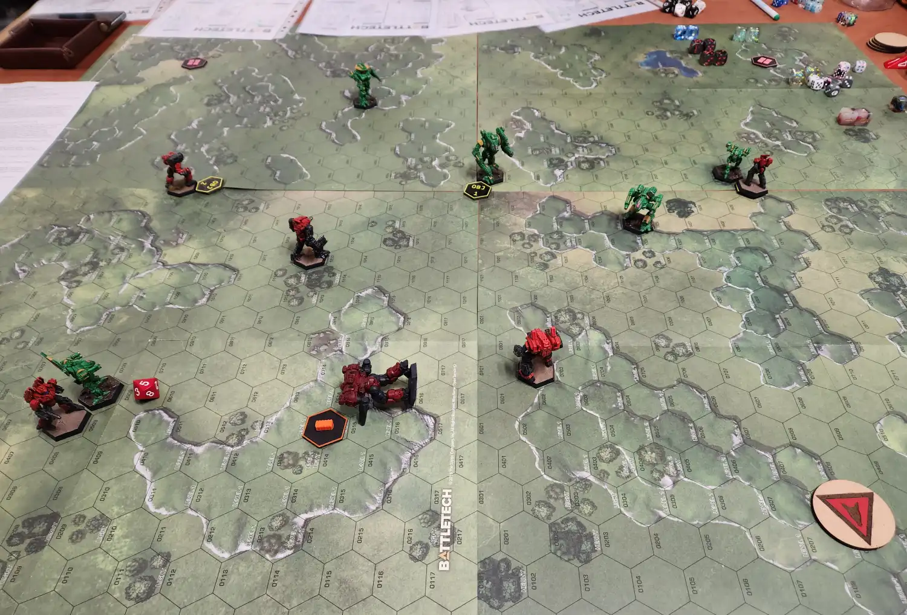

AMC Classic Battletech Players
Auckland Model Citizens Wargaming Club

About Us
We’re a community of Classic Battletech enthusiasts in Auckland who meet weekly at HobbyMaster in Penrose Auckland to play every Tuesday; from ~5:30pm till closing at 10pm.
We play the Classic rule set of Battletech, using the Battlemech Manual and/or Total Warfare.
A quick-start sample of the Battletech rules can be found on the Official Website
Game formats
We run a modified version of the Battletech Chaos Campaign, as well as casual pick up games.
How to get in contact
All club communications are within the AMC (Auckland Model Citizens) Facebook group, feel free to join! Link to AMC
Motivation
I created this simple website for search engine optimisation
When I grew an interest in picking up Classic Battletech as a hobby, I had a remarkably difficult time finding a group within Auckland. The majority of table-top hobby groups organize themselves within Facebook groups, often private groups; which can be difficult to find and have poor search engine optimisation. This is my attempt to get some visibility on Google and drive people whom are interested in the right direction.